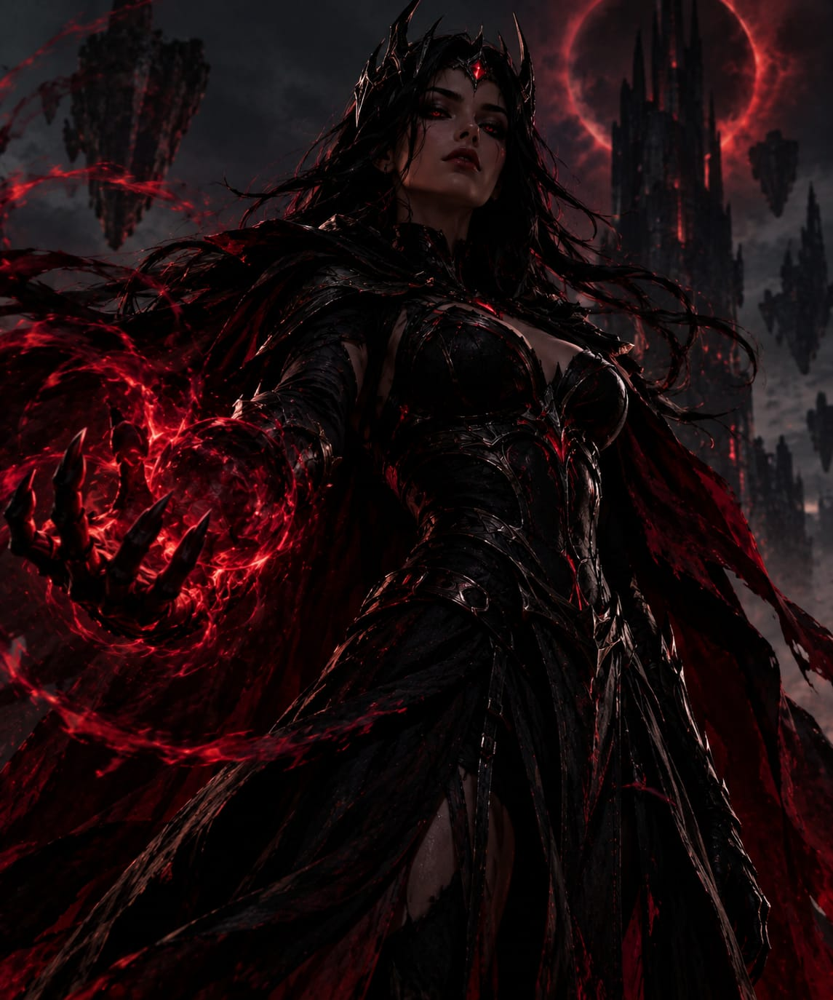

Eu não preciso destruir seu mundo. Só preciso convencer você de que ele já acabou.
Uma entidade misteriosa que aparece durante eclipses, deixando cidades inteiras mergulhadas em medo e escuridão.
Ver arquivo
Pouco se sabe sobre a verdadeira origem da Rainha do Eclipse Vermelho. Os primeiros registros surgiram centenas de anos atrás, quando moradores de uma pequena cidade afirmaram ter visto uma mulher surgir durante um eclipse.
Segundo os relatos, depois de sua aparição as pessoas começaram a ter os mesmos pesadelos. Em todos eles, uma figura feminina observava a cidade de longe enquanto o céu ficava completamente vermelho.
Desde então, novos relatos aparecem sempre que um eclipse acontece. Nenhuma fotografia conseguiu comprovar sua existência.
17 de março — 23:48
Moradores relataram uma silhueta feminina no topo de uma construção poucos minutos antes do eclipse.
08 de agosto — 02:17
Câmeras de segurança registraram uma queda repentina de energia acompanhada por uma sombra desconhecida.
Registro não confirmado
Uma testemunha afirmou ter ouvido uma voz dizendo: "O eclipse está apenas começando."
Caso a Rainha do Eclipse seja avistada, não tente se aproximar. Evite olhar diretamente para a figura e procure um local iluminado.